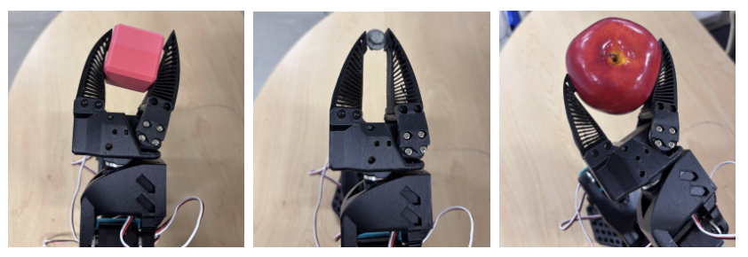
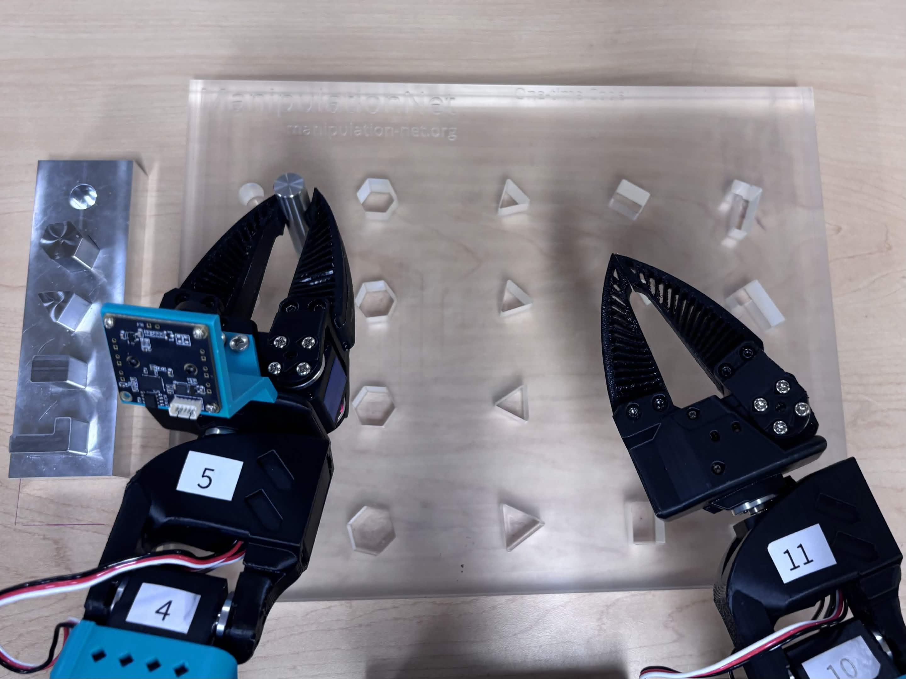
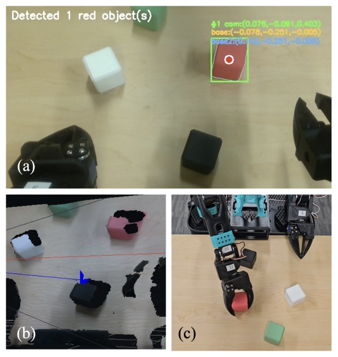

Democratizing Embodied AI.
XLeRobot-Pro is a highly capable, $1,200 bimanual mobile manipulator. Designed for researchers and labs to rapidly deploy imitation learning, VLA models, and autonomous robotic agents.

Why XLeRobot-Pro?
The barrier to entry for advanced robotics research has traditionally been gated by six-figure hardware. XLeRobot-Pro bridges the gap between simulation and reality by providing a robust, highly reproducible physical platform.
By leveraging mostly 3D-printed components, affordable hardware, and a mobile base, labs can scale their data collection pipelines and deploy fleet-level reinforcement learning without massive capital constraints.
System Capabilities
Native integration with the Hugging Face LeRobot framework allows for out-of-the-box data collection and policy training. See the system in action below.

Bimanual Teleoperation: Smooth leader-follower kinematics using dual SO-100 arms for high-fidelity dataset collection.
Autonomous Execution: Evaluating a trained Action Chunking with Transformers (ACT) policy on a folding task.
Hardware Architecture
Designed for modularity. Swap compute nodes, upgrade sensor suites, or modify the chassis parameters to fit your specific research parameters.
Front Profile
Full system view showcasing the bimanual SO-100 arms and functionally graded chassis.
Sensor Suite
Head-mounted RGB-D perception for SLAM navigation and high-fidelity environmental mapping.
Compute Deck
Centralized Tri-Bus power routing and integrated NVIDIA Jetson Orin Nano for onboard GPU compute.
End-Effector

Software Stack & Algorithms
The XLeRobot-Pro utilizes a hybrid approach, merging precise classical robotics control with state-of-the-art end-to-end learning models.
Inverse Kinematics (IK)

SLAM & Mapping

Color Segmentation

LeRobot Integration
Natively fully compatible with the Hugging Face LeRobot framework for standardized data collection, policy training, and community sharing.
Credits & Acknowledgements
Project Creators
XLeRobot-Pro was developed and refined by Artemis Shaw, Chen Liu, Justin Costa, Rane Gray, Alina Skowronek, Kevin Diaz, Nam Bui, Nikolaus Correll.
Core Frameworks
- LeRobot: Built upon the foundational work of the Hugging Face LeRobot team.
- XLeRobot: Referencing the architectural design and initial implementation by Vector-Wangel.
Ready to start?
Start Building ↗